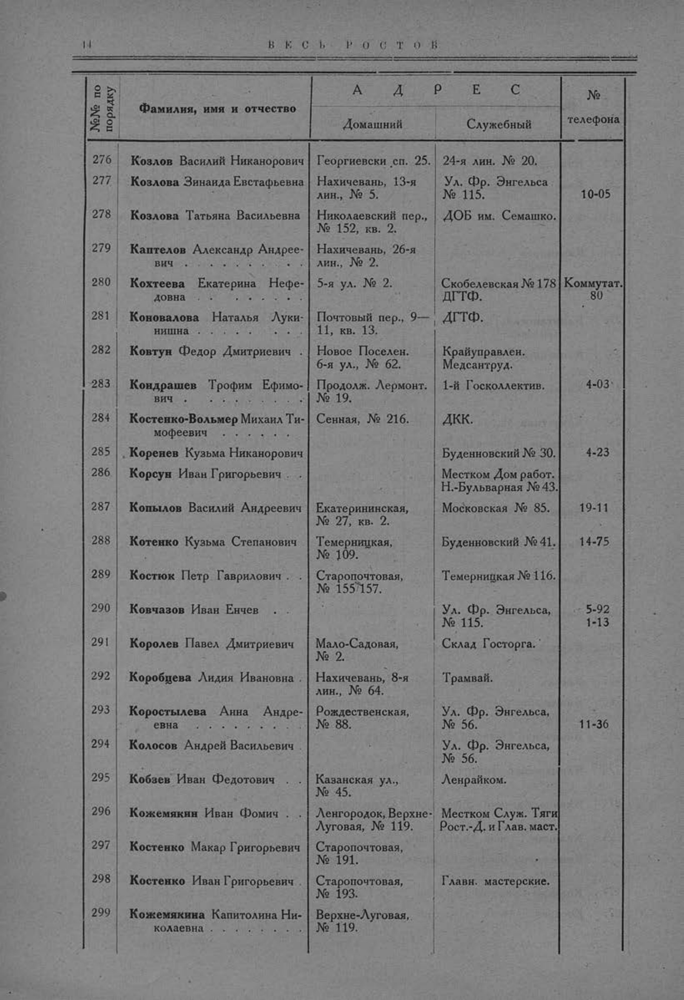

Лист источника 62
Скан

Распознанный текст
14 В Е С Ь Р О С Т О В
№№ по порядку Фамилия, имя и отчество А Д Р Е С № телефона
Домашний Служебный
276 Козлов Василий Никанорович Георгиевски сп. 25. 24-я лин. № 20.
277 Козлова Зинаида Евстафьевна Нахичевань, 13-я лин., № 5. Ул. Фр. Энгельса № 115. 10-05
278 Козлова Татьяна Васильевна Николаевский пер., № 152, кв. 2. ДОБ им. Семашко.
279 Каптелов Александр Андреевич . . . . . . . . . Нахичевань, 26-я лин., № 2.
280 Кохтеева Екатерина Нефедовна . . . . . . . . . 5-я ул. № 2. Скобелевская № 178 ДГТФ. Коммутат. 80
281 Коновалова Наталья Лукинишна . . . . . . . . Почтовый пер., 9—11, кв. 13. ДГТФ.
282 Ковтун Федор Дмитриевич . Новое Поселен. 6-я ул., № 62. Крайуправлен. Медсантруд.
283 Кондрашев Трофим Ефимович . . . . . . . . . Продолж. Лермонт. № 19. 1-й Госколлектив. 4-03
284 Костенко-Вольмер Михаил Тимофеевич . . . . . . . . Сенная, № 216. ДКК.
285 Коренев Кузьма Никанорович Буденновский № 30. 4-23
286 Корсун Иван Григорьевич . Местком Дом работ. Н.-Бульварная № 43.
287 Копылов Василий Андреевич Екатерининская, № 27, кв. 2. Московская № 85. 19-11
288 Котенко Кузьма Степанович Темерницкая, № 109. Буденновский № 41. 14-75
289 Костюк Петр Гаврилович . Старопочтовая, № 155/157. Темерницкая № 116.
290 Ковчазов Иван Енчев . . Ул. Фр. Энгельса, № 115. 5-92 1-13
291 Королев Павел Дмитриевич Мало-Садовая, № 2. Склад Госторга.
292 Коробцева Лидия Ивановна Нахичевань, 8-я лин., № 64. Трамвай.
293 Коростылева Анна Андреевна . . . . . . . . . Рождественская, № 88. Ул. Фр. Энгельса, № 56. 11-36
294 Колосов Андрей Васильевич Ул. Фр. Энгельса, № 56.
295 Кобзев Иван Федотович . Казанская ул., № 45. Ленрайком.
296 Кожемякин Иван Фомич . Ленгородок, Верхне-Луговая, № 119. Местком Служ. Тяги Рост.-Д. и Глав. маст.
297 Костенко Макар Григорьевич Старопочтовая, № 191.
298 Костенко Иван Григорьевич Старопочтовая, № 193. Главн. мастерские.
299 Кожемякина Капитолина Николаевна . . . . . . . . Верхне-Луговая, № 119.